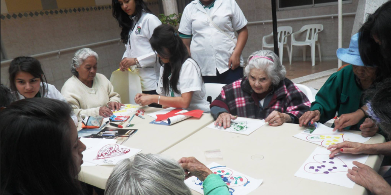

Historia y Fundación
El 5 de mayo de 1901, bajo directrices del obispo Ignacio Antonio Parra y múltiples solicitudes del clero, concejo municipal y benefactores, se formalizó la creación del Asilo San Antonio, bajo el liderazgo del presbítero José de Jesús Peralta.
En 1931, el padre Eduardo Laviña adquirió el lote actual y se comenzó la construcción de la capilla, que fue bendecida en 1954.

Arquitectura del lugar
Su iglesia es considerada de estilo neogótico o gótico normando, diseñada por el padre francés Andrés Basset. Es una joya arquitectónica poco reconocida, construida con el esfuerzo de obreros como Numa Pompilio Cáceres.
Labor social
Las Hermanitas de los Ancianos Desamparados han brindado techo, alimento y cuidados a cientos de adultos mayores durante más de 120 años. El asilo también funcionó como hospital en sus primeros años.
Una obra que necesita de todos
Hoy el asilo enfrenta dificultades estructurales graves. Si no se actúa, podría desaparecer. El llamado es a la solidaridad de todos los malagueños y rovirenses.
¿Cómo ayudar?
Puedes donar dinero o materiales (cemento, pintura, arena).
Cuenta Bancolombia: 31286084602
Nombre: Asilo San Antonio
Celular: 3208815252
Teléfono fijo: (037) 6607401